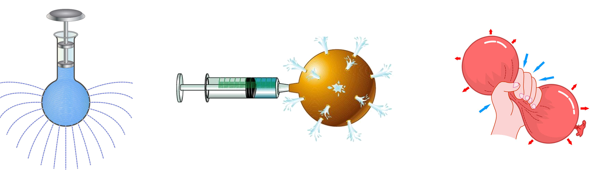
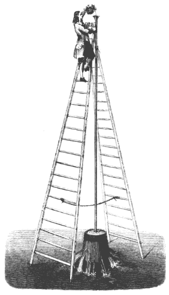
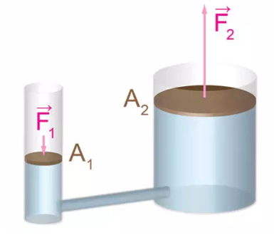
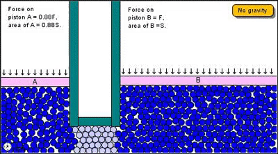

Aula5-35: Teorema de Pascal
Teorema de Pascal
Enunciado:
O acréscimo de pressão em um líquido em equilíbrio é transmitido integralmente a todos os seus pontos. Ou seja, se a pressão variar em um ponto A qualquer do líquido, todos os demais pontos sofrerão a mesma variação de pressão.

O barril de Pascal
|
Blaise Pascal (★ 1623 — 1662 ✝), em 1646, executa o seguinte experimento para justificar esse teorema: Um tubo delgado de aproximadamente 10 metros de altura é conectado à tampa superior de um barril. Pascal passa a preencher o tubo com água. A pressão exercida por essa coluna de água, segundo o princípio de Pascal, distribui-se por todos os pontos do barril. Com esse experimento, Pascal conseguiu explodir o barril com apenas um litro de água, comprovando a validade do teorema que enunciara. |
 |
Prensa hidráulica
Entre os instrumentos mecânicos, a prensa hidráulica é a principal aplicação do princípio de Pascal. Observe a ilustração abaixo.
|
 |
 |
Observe que, segundo o teorema de Pascal, a pressão aplicada no cilindro da esquerda é transmitida ao cilindro da direita. Assim, manipulando a área dos cilindros, podemos fazer com que uma força relativamente pequena sobre um dos êmbolos (parte móvel do cilindro) resulte em uma força relativamente grande no outro. Aplicar uma força pequena e o sistema devolver uma força grande é o princípio de funcionamento das prensas hidráulicas.
Outros equipamentos que utilizam o princípio de Pascal:
⚛ Macaco hidráulico
⚛ Freio hidráulico